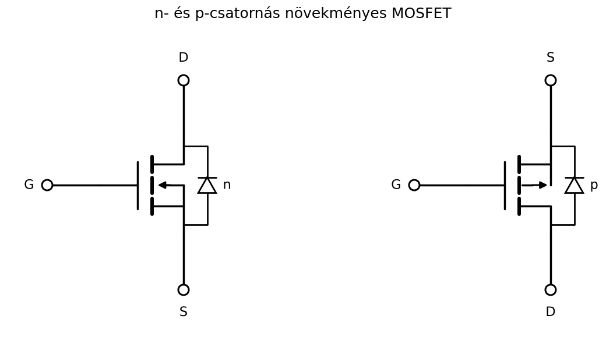

Ebben az alfejezetben megtanulod, hogyan kapcsol egy MOSFET feszültséggel, miért nem folyik a vezérlő kivezetésén egyenáram, hogyan döntöd el, melyik üzemi tartományban van, és hogyan olvasod ki az adatlapból azt az egyetlen számot, amelyre a legtöbb kapcsolót méretezed: a bekapcsolt ellenállást. A végén ki tudod számolni a vezetési veszteséget, és tudod, miért nem „be” egy MOSFET a küszöbfeszültségén.
A szenzormodul egyik kimenete egy szolenoidot (kis behúzómágnest) kapcsol: 12 V-on 12 Ω, tehát 1 A folyik rajta. A mikrovezérlő egy kimeneti lába (GPIO) 3,3 V-os jelet ad, és ajánlott árama legfeljebb 8 mA (mintaadat). Közvetlenül tehát nem hajthatja meg a terhelést, kapcsoló kell közéjük.
Az A BJT mint kapcsoló alfejezet bipoláris tranzisztora árammal vezérelhető: telítésbe vinni 1 A-es kollektoráramnál tízszeres túlvezérléssel nagyjából 100 mA bázisáram kellene – ez a GPIO képességének tízszeresén felüli érték, és még a bekapcsolt tranzisztoron is néhány tized volt maradna. A MOSFET (metal–oxide–semiconductor field-effect transistor, fém–oxid–félvezető térvezérlésű tranzisztor) más elven működik: a vezérlő kivezetése egy vékony szigetelőréteggel el van választva az áram útjától. Bekapcsolva tartáshoz nem kell áram, és a bekapcsolt eszköz néhány tíz milliohmos ellenállásként viselkedik.
Egy n-csatornás növekményes (enhancement) MOSFET leegyszerűsített metszete a következő. Egy p típusú félvezető hordozóban (test, body) két erősen adalékolt n+ sziget van: a forrás (source, S) és a nyelő (drain, D). A kettő közti sáv fölött egy nagyon vékony oxidréteg, azon a vezető kapu (gate, G). (A magyar szövegekben a „gate”, „source”, „drain” angol szó is bevett; a rajzjeleken és a képletekben G, S, D szerepel.)
Gate-feszültség nélkül a forrás és a nyelő közötti út két, egymással szemben kötött pn-átmenet: az egyik mindig záróirányú, ezért alig folyik áram. A gate-re pozitív feszültséget adva (a forráshoz képest) a gate és a hordozó úgy viselkedik, mint egy kondenzátor két fegyverzete. A pozitív gate először eltaszítja a hordozó pozitív töltéshordozóit (a lyukakat) a felület alól: kiürített réteg (depletion layer) keletkezik, amelyben nincs szabad töltés. Ha a feszültség elég nagy, a gate már odavonzza az elektronokat, és a felület alatt vékony, elektronokban gazdag sáv jön létre: a csatorna (channel, más néven inverziós réteg). Ez köti össze a forrást a nyelővel. Az a gate–source feszültség, amelynél a csatorna éppen megjelenik, a küszöbfeszültség.
A képsoron a küszöb 1,0 V (az MN1 mintatípus tipikus értéke). A 2. képen 0,8 V van a gate-en: a kiürített réteg már mély, de elektron még nincs a felületen. A 3. és 4. képen a csatorna végigér, és a nagyobb gate-feszültséghez vastagabb csatorna, tehát kisebb ellenállás tartozik. Az 5. képen a nyelő feszültsége nagy: a nyelő közelében a gate és a félvezető közti feszültség már a küszöb alá csökken, ezért ott a csatorna elvékonyodik, „elzáródik”.
Analógia és korlátja. A MOSFET olyan, mint egy zsilip: a gate-feszültség nyitja a kaput, a nyelő „nyomása” hajtja a vizet. Az analógia a vezérlés energiaigényét jól mutatja (a zsilipet nyitva tartani nem kerül vízbe), de rossz a zárt állapotnál (a MOSFET-en kikapcsolva is folyik pici szivárgási áram), és nem mutatja, hogy a kapu mozgatásához töltés kell – erről a Kapcsolási folyamat: gate-töltés, Miller-plató és meghajtás alfejezet szól.
A valódi teljesítmény-MOSFET-ben a nyelő a chip alján van, az áram függőlegesen halad, és egy tokban sok ezer párhuzamos cella dolgozik. A működés elve ugyanaz. Létezik kiürítéses (depletion mode) típus is, amely 0 V gate-feszültségnél vezet; ez ritka, a könyvben a növekményes típust használjuk.

A rajzjel mindent elmond a szerkezetről: a gate vonala nem érinti a csatornát (szigetelés), a csatorna három darabból áll (alapállapotban megszakított, azaz növekményes), a középső darabhoz tartozó nyíl a test–csatorna pn-átmenet irányát mutatja. n-csatornás eszköznél a nyíl a csatorna felé mutat, a p-csatornásnál kifelé. A test a tokban a source-hoz van kötve.
Definíció. A küszöbfeszültség (rövidebben ) az a gate–source feszültség, amelynél a csatorna kialakulni kezd. Az adatlap egy meghatározott, kicsi drain-áramhoz rendeli (például 250 µA – mintaadat), és legkisebb, tipikus és legnagyobb értéket ad. Az MN1 mintatípusnál 0,6 V / 1,0 V / 1,4 V.
Definíció. A túlvezérlés (overdrive) azt mondja meg, mennyivel van a gate a küszöb fölött.
Az n-csatornás MOSFET három tartománya (a feszültségek a source-hoz képest):
| Tartomány | Feltétel | Viselkedés |
|---|---|---|
| lezárt (cut-off) | (csak szivárgás) | |
| ohmos vagy lineáris (triode) | , | feszültséggel vezérelt ellenállás |
| telítés (saturation) | , | feszültséggel vezérelt áramforrás |
Vigyázz a „telítés” szóra! A BJT-nél a telítés a teljesen bekapcsolt állapot, kis -vel. A MOSFET-nél a telítés az, amikor a drain-áram telítődik (nem nő tovább), miközben a feszültség a tranzisztoron nagy – ez a BJT aktív tartományának felel meg. A jó kapcsoló MOSFET az ohmos tartományban van.
A legegyszerűbb, kézzel is számolható modell (négyzetes vagy Shichman–Hodges-modell):
Itt a transzkonduktancia-paraméter, egysége : a szorzat valóban amper. A két képlet a határon, -nál ugyanazt adja (), a görbe tehát folytonos. (A telítési ágon a valóságban az áram még kissé nő -sel; ezt most elhanyagoljuk.)
Ohmos tartomány, kis . Ha , a négyzetes tag elhanyagolható: . Az áram arányos a feszültséggel, tehát a MOSFET ellenállás:
Szavakkal: a bekapcsolt ellenállás annál kisebb, minél nagyobb a túlvezérlés. Egység: .
Telítés: transzkonduktancia. Telítésben a MOSFET áramforrás, amelyet a gate-feszültség vezérel. A meredekséget a adja (egysége siemens); ugyanaz a szerep, mint a BJT -je az Erősítő alapkapcsolások és a kisjelű modell alfejezetben. Erősítőben ez a tartomány a hasznos, kapcsolóban ez a veszélyes: az eszközön egyszerre nagy a feszültség és az áram.
A
értéke attól függ, melyik pontra illeszted a modellt. A könyv az
elkit MN1 mintatípusánál a 4,5 V-os garantált pontot
használja:
.
A valódi eszközök eltérnek a négyzetes törvénytől, ezért a modell a
viselkedés megértésére való; méretezni az adatlap
garantált értékeiből fogunk.
Gondolkodj előre: a szolenoid 12 Ω-os, a gate-re pontosan a tipikus küszöböt, 1,0 V-ot adsz. Mekkora áram folyik? És 1,3 V-nál? Jósolj, mielőtt tovább olvasnál.
A terhelés és a MOSFET sorba van kötve a 12 V-ra, ezért két egyenletnek kell egyszerre teljesülnie: a MOSFET karakterisztikájának és a terhelési egyenesnek (lásd Nemlineáris elemek és a munkapont). A metszéspont a munkapont.
Ha a példány küszöbe a legnagyobb 1,4 V, akkor 1,5 V gate-feszültségnél csak 41 mA folyik, a tipikus példánynál viszont közel 1 A. A küszöb tehát szórás, nem kapcsolási pont.
A p-csatornás eszközben minden előjel fordított: akkor vezet, ha a gate negatívabb a source-nál, azaz nagyobb a küszöb nagyságánál. Az adatlap gyakran abszolút értékeket közöl. A lyukak lassabbak az elektronoknál, ezért azonos chipméretnél a p-csatornás eszköz bekapcsolt ellenállása nagyobb. Ahol mégis hasznos: a terhelés „felső” oldalán (a tápsín felől) kapcsolni (MOSFET kapcsolóként: low-side és high-side).
A test és a nyelő közötti pn-átmenet nem tűnik el, hiszen a test a source-hoz van kötve. Így a source és a drain között mindig ott egy dióda, a test-dióda (body diode): n-csatornánál az anód a source, a katód a drain. Következmények:
Az MN1 egy kitalált, de valószerű, logikai szintű n-csatornás mintatípus (nem konkrét termék):
| Paraméter | MN1 (mintaadat) | Mit jelent |
|---|---|---|
| 40 V | abszolút határérték; tartalékkal használd | |
| ±12 V | az oxid átütési védelme; túllépése végleges hiba | |
| (folyamatos) | 4 A | meghatározott hűtési feltételek mellett |
| 0,6 / 1,0 / 1,4 V | a csatorna megjelenése, nem a bekapcsolás | |
| max. 50 mΩ @ 2,5 V; max. 35 mΩ @ 4,5 V | 25 °C-on, a megadott gate-feszültségen garantált | |
| 8 nC @ 4,5 V | a bekapcsoláshoz szükséges gate-töltés | |
| , , | 600 / 90 / 55 pF | parazita kapacitások |
| , | 125 K/W, 150 °C | hőadatok |
Abszolút határérték nem üzemi tartomány: a túllépése károsodást okozhat, a közelében a megbízhatóság romlik. Az 4 A-es értéke sem azt jelenti, hogy a kis tok 4 A-rel hűtés nélkül üzemelhet.
Az görbe a legfontosabb: csak a tesztpontokban garantált. Közöttük a tipikus görbe tájékoztat, a legkisebb tesztpont alatt pedig semmi sem garantált. A 3,3 V-os GPIO-ról hajtott MN1-nél a tervezési érték ezért a 2,5 V-os tesztpont maximuma, 50 mΩ (a mintagörbe 3,3 V-on kb. 41 mΩ-ot mutat, de ez tipikus jellegű). Ezt hívjuk logikai szintű MOSFET-nek: a gyártó 2,5 V-on (vagy 4,5 V-on, 1,8 V-on) is garantál ellenállást. A hagyományos, „10 V-os” típus (MN_STD) csak 10 V-on ad garanciát, 3,3 V-ról nem használható.
A bekapcsolt ellenállás nő a hőmérséklettel (pozitív hőfoktényező): a mintaadatban 100 °C-on 1,36-szoros, 150 °C-on 1,65-szörös a 25 °C-ra vonatkozó érték.
Vezetési veszteség. Bekapcsolt állapotban a MOSFET ellenállás, ezért
ahol az áram effektív értéke (állandó áramnál maga az áram; PWM-nél négyszög alakú áramra , azaz ). Egység: . A hőmérsékletet a egyenlet adja; mivel függ -től, a kettőt iterációval (próbálgatás, amíg nem változik) kell egyszerre megoldani.
A gate-oxid néhány tíz voltos elektrosztatikus kisüléstől is átüthet, mert a gate kapacitása kicsi, így kevés töltés nagy feszültséget hoz létre (). Ha az MN1 600 pF-os bemeneti kapacitására csak 12 nC jut, az már 20 V – a ±12 V-os határ fölött. Ezért kell a gate-et védeni (Elektrosztatikus kisülés (ESD)), és ezért nem szabad lebegve hagyni.
Továbbvitt eredmény. Kapcsolóként a MOSFET az ohmos tartományban van: , és ellenállásként a tesztfeszültségen garantált -nal számolunk, a hőmérséklet-szorzóval; . Ezt használja a MOSFET kapcsolóként: low-side és high-side, a Kapcsolási folyamat: gate-töltés, Miller-plató és meghajtás, a Biztonságos működési tartomány, lavina és induktív terhelés, A buck konverter és Az adatlap olvasása. A test-dióda (anód: source, katód: drain n-csatornánál) a low-side/high-side kapcsolóknál és a polaritásvédelemnél (MOSFET kapcsolóként: low-side és high-side, Tápbemeneti védelmek: biztosíték, polaritás, túlfeszültség, áramlökés, A buck konverter) tér vissza, a pozitív hőfoktényező pedig a párhuzamosításnál és a hőtervezésnél (Biztonságos működési tartomány, lavina és induktív terhelés, Hőtervezés és vezetőmelegedés).
Feladat. A szolenoidot (1 A) MN1 kapcsolja tartósan, a gate-en 3,3 V, a környezet 60 °C (a szenzormodul legmagasabb környezeti hőmérséklete). Mekkora a záróréteg-hőmérséklet és a veszteség?
Ha ugyanez a MOSFET csak 1,3 V-os gate-feszültséget kapna, a fenti tartománypélda szerint 2,8 W-ot disszipálna: majdnem ötvenszer annyit.
Az elkit.devices modul a mintatípusok adatait és a
négyzetes modellt is tartalmazza.
from elkit import devices as dv, units
m = dv.MN1
for u_gs in (2.5, 3.3, 4.5):
g, t = m.rds_on_guaranteed(u_gs), m.rds_on(u_gs)
print(f"U_GS = {u_gs} V: garantált {units.fmt(g, 'Ω')}, tipikus görbe {units.fmt(t, 'Ω')}")
for name in ("MN_STD", "MN1"):
try:
print(name, units.fmt(dv.MOSFETS[name].rds_on_guaranteed(2.0), "Ω"))
except ValueError as err:
print("nincs adat:", str(err).split(" – ")[0].split(": ", 1)[1])
t_j = 25.0 # első kör: 25 °C-os ellenállással
for k in range(4):
r = m.rds_on_guaranteed(3.3, t_j)
p = 1.0 ** 2 * r
t_j = 60.0 + p * m.r_thja
print(f"{k + 1}. kör: R = {units.fmt(r, 'Ω')}, P = {units.fmt(p, 'W')}, T_J = {t_j:.1f} °C")U_GS = 2.5 V: garantált 50 mΩ, tipikus görbe 50 mΩ
U_GS = 3.3 V: garantált 50 mΩ, tipikus görbe 41 mΩ
U_GS = 4.5 V: garantált 35 mΩ, tipikus görbe 35 mΩ
nincs adat: |U_GS| = 2 V-on nincs garantált R_DS(on) (a legkisebb tesztpont 10 V)
nincs adat: |U_GS| = 2 V-on nincs garantált R_DS(on) (a legkisebb tesztpont 2.5 V)
1. kör: R = 50 mΩ, P = 50 mW, T_J = 66.2 °C
2. kör: R = 59.4 mΩ, P = 59.4 mW, T_J = 67.4 °C
3. kör: R = 59.7 mΩ, P = 59.7 mW, T_J = 67.5 °C
4. kör: R = 59.7 mΩ, P = 59.7 mW, T_J = 67.5 °CA kézi számolás és a program egyezik. A függvény
ValueError-t dob, ha olyan gate-feszültségre kérsz
ellenállást, amelyre nincs adat – ez szándékos: nem extrapolál.
A munkapontot a négyzetes modell és a terhelési egyenes metszése adja:
sq = dv.SquareLawMosfet.from_data(dv.MN1)
print(f"k = {sq.k:.2f} A/V², U_th = {sq.u_th} V")
for u_gs in (1.0, 1.2, 1.3, 1.5, 3.3):
u_ds, i_d, region = dv.mosfet_operating_point(sq, 12.0, 12.0, u_gs)
print(f"U_GS = {u_gs} V: {region:8s} I_D = {units.fmt(i_d, 'A'):>8}, "
f"U_DS = {units.fmt(u_ds, 'V'):>8}, P = {units.fmt(u_ds * i_d, 'W')}")k = 8.16 A/V², U_th = 1.0 V
U_GS = 1.0 V: lezárt I_D = 1.02 µA, U_DS = 12 V, P = 12.2 µW
U_GS = 1.2 V: telítés I_D = 163 mA, U_DS = 10 V, P = 1.64 W
U_GS = 1.3 V: telítés I_D = 367 mA, U_DS = 7.59 V, P = 2.79 W
U_GS = 1.5 V: ohmos I_D = 968 mA, U_DS = 386 mV, P = 374 mW
U_GS = 3.3 V: ohmos I_D = 996 mA, U_DS = 53.6 mV, P = 53.4 mWA „lezárt” sorban látható mikroamper a test-dióda záróirányú szivárgásának modellje.
A1. Az MN1 gate-jén 4,5 V van, a draináram 2 A, a záróréteg 25 °C. Mekkora a vezetési veszteség és az ?
A2. A négyzetes modellben ( A/V², V) add meg a tartományt és az áramot: (a) V, V; (b) V, V; (c) V, V.
B3. A GPIO-jel 1,8 V-os, a terhelés a 12 V-os sínen van (16 V legnagyobb bemenet, 30 V egyszerűsített tranziens). Alkalmas-e az MN1, az MN_STD vagy az MN_LL18 (1,8 V-on garantált, V)? Indokolj.
B4. Az MN1 (3,3 V-os gate) 1,5 A-t kapcsol tartósan, °C. Mekkora a záróréteg-hőmérséklet? (A mintagörbe: 50 °C → 1,11; 75 °C → 1,23; 100 °C → 1,36.)
B5. Mekkora legnagyobb tartós áramot enged meg a 125 °C-os saját tervezési határ 3,3 V-os gate-tel, 60 °C-os környezetben? Miért kisebb ez az adatlap 4 A-énél?
C6. (Programozás) Írj rövid kódot, amely 12 V-os táp, 12 Ω-os terhelés és V mellett kiszámolja az áramot és a disszipációt a három küszöbértékre (0,6; 1,0; 1,4 V), azonos mellett. Mit mutat az eredmény a tervezés szempontjából?
C7. Az n-csatornás low-side kapcsoló tápját fordítva kötik be (a terhelés teteje −12 V a GND-hez képest), a gate 0 V. Mi történik, és mekkora feszültség jut a terhelésre?
A MOSFET gate-feszültséggel vezérelt eszköz: a gate szigetelt, egyenáramon nem folyik rajta áram. Az n-csatornás típus a küszöb fölött csatornát hoz létre; tartományai a lezárt, az ohmos () és a telítés (áramforrás-szerű). Kapcsolóként az ohmos tartományban kell lennie. A küszöbnél még nincs bekapcsolva, és a küszöb példányonként szór. Méretezni a gate-feszültséghez tartozó garantált -nal kell (MN1, 3,3 V: 50 mΩ), hőfokszorzóval: . A test-dióda a source-tól a drain felé mindig vezethet. A gate ESD-érzékeny, lebegni nem szabad. A négyzetes modell a tartományok megértésére való; a méretezés alapja mindig az adatlap garantált tesztpontja és a hőmérséklet-függés, a legkisebb tesztpont alatt pedig semmilyen ellenállás nem garantált.
A1. mΩ. mV, W.
A2. (a) V : ohmos. A. (b) V : telítés. A. (c) : lezárt, .
B3. MN1: a legkisebb garantált tesztpont 2,5 V – 1,8 V-ról nincs garancia, nem alkalmas. MN_STD: csak 10 V-on garantál – nem alkalmas. MN_LL18: 1,8 V-on garantált (80 mΩ), de V: a tranziens 30 V (és már a 16 V-os bemenet plusz a dióda kb. 16,45 V-ja is a határ 82 %-a), nem alkalmas. Egyik sem felel meg mindkét feltételnek: vagy 40 V-os, 1,8 V-on garantált típus kell, vagy gate-meghajtó, amely 4,5 V-ot ad (MN1).
B4. Kiindulás: mΩ, W, °C. Szorzó 74,1 °C-on : mΩ, W, °C. Szorzó 77,2 °C-on : mΩ, W, °C. Eredmény: ≈ 77,5 °C, bőven a határ alatt.
B5. W. 125 °C-on mΩ. A. A 4 A-es adatlapérték jobb hűtést (alacsonyabb tok- vagy panelhőmérsékletet) feltételez.
C6.
k = dv.SquareLawMosfet.from_data(dv.MN1).k
for u_th in (0.6, 1.0, 1.4):
model = dv.SquareLawMosfet(k=k, u_th=u_th)
u_ds, i_d, region = dv.mosfet_operating_point(model, 12.0, 12.0, 1.5)
print(f"U_th = {u_th} V: I_D = {units.fmt(i_d, 'A')}, P = {units.fmt(u_ds * i_d, 'W')}, "
f"{region}")U_th = 0.6 V: I_D = 988 mA, P = 145 mW, ohmos
U_th = 1.0 V: I_D = 968 mA, P = 374 mW, ohmos
U_th = 1.4 V: I_D = 40.8 mA, P = 470 mW, telítésUgyanaz a vezérlőjel az egyik példányt bekapcsolja, a másikat alig nyitja: a szórás miatt 1,5 V-ra nem szabad tervezni.
C7. A drain a terhelésen át −12 V-hoz kapcsolódik, a source a GND-n van: a drain negatívabb a source-nál, ezért a test-dióda nyit. Az áram a GND-ből a diódán és a terhelésen át a negatív sínre folyik, a terhelésre kb. V jut, fordított polaritással, a gate állapotától függetlenül. Polaritásra érzékeny terhelésnél (vagy elektrolitkondenzátornál) ez kárt okozhat; a védelmet a Tápbemeneti védelmek: biztosíték, polaritás, túlfeszültség, áramlökés tárgyalja.